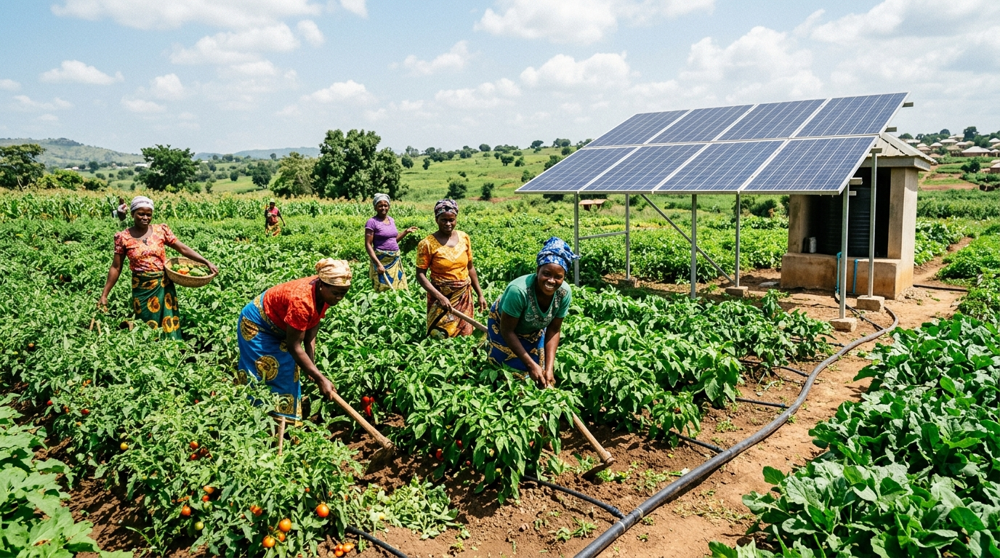

Home / About Us
An institution built for lasting, local prosperity.
GIDA bridges cutting-edge science, market systems engineering, and community-led execution, as an incorporated Company Limited by Guarantee dedicated to public impact.
Organization Profile
Cultivating spaces where rural communities prosper.
Growth Innovation for Development Action (GIDA) is a development organization committed to building inclusive, healthy, green, and resilient rural communities. We empower people through sustainable livelihoods, market opportunities, green infrastructure, community health, innovation, and social inclusion. Creating spaces where people prosper.

Vision
A world of inclusive, healthy, green, resilient rural ecosystems.
Where every person has the equity, tools, and agency to prosper.
Mission
To cultivate spaces where people prosper.
By transforming rural market systems, empowering marginalized demographics, pioneering green infrastructure, and advancing community health and biological innovations.
Economic Wealth
Equitable, market-led livelihoods.
Biological Health
Bio-safe food, water and soil systems.
Social Dignity
Ownership and voice, not just headcount.
Environmental Resilience
Green, climate-adapted infrastructure.
Our operating model
Three frameworks, integrated into one system.
Integrated Rural Development
A holistic approach harmonizing market systems, off-farm enterprise, green infrastructure, community health/WASH, and local governance in the same communities at the same time.
Market Systems Development
De-risking private investment, building equitable buyer-supplier relationships, and deploying digital & financial tools tailored to unbanked rural households.
One Health integration
Connecting human, animal, and environmental health, bio-safe food systems, water microbiology, and soil ecosystem restoration as one continuum.